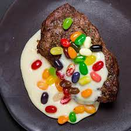

milksteak

milksteak, boiled over hard, with a side of jellybeans served raw.as
as made famous by Charlie Kelly.
- 1 medium flat iron steak
- 2 cups whole milk
- 1/4 cub honey
- 1/2 tsp cinnamon
- 1/2 tsp nutmeg
- 1 tsp vanilla extract
- 1/2 cup jellybeans
- add the milk, honey, cinnamon, nutmeg, and vanilla to a mediumsized saucepan.
- heat up the mixture, stirring until the honey has completely dissolved
- bring the mixture to a boil and then carefully place the steak in the mixture
- turn down to a simmer and cook the steak for 10 minutes
- allow the steak to rest for 5 minutes and garnish with the jellybeans